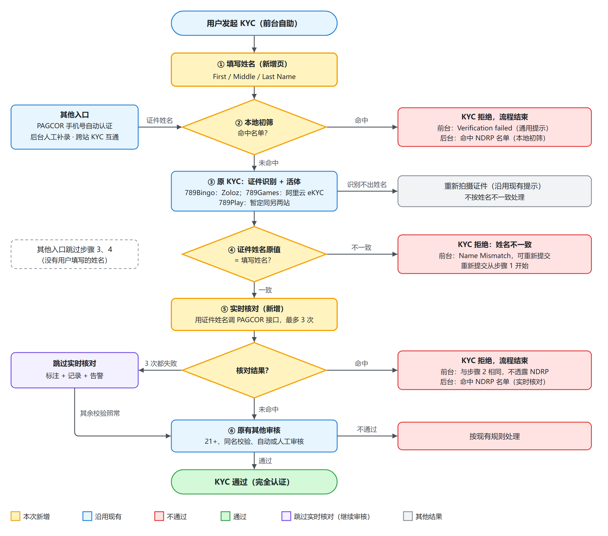
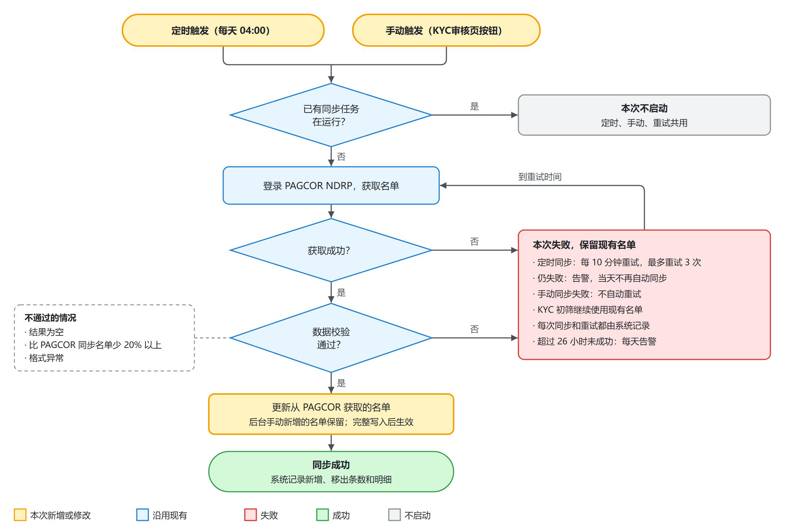
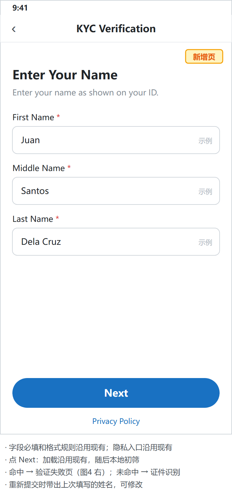
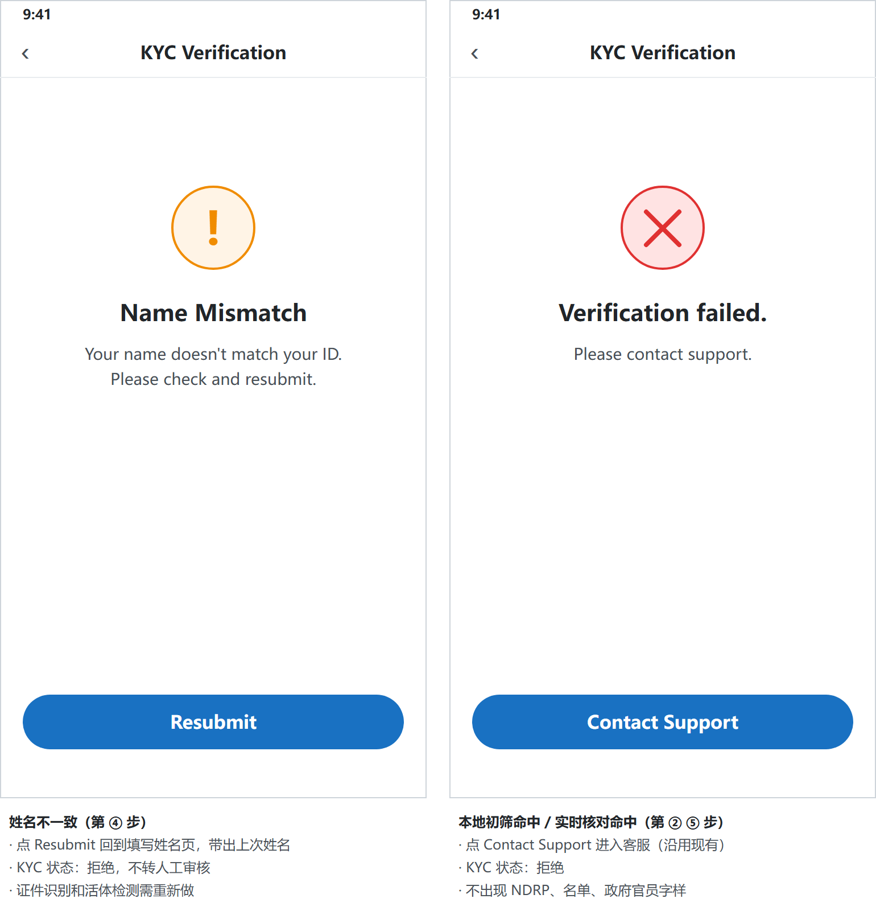
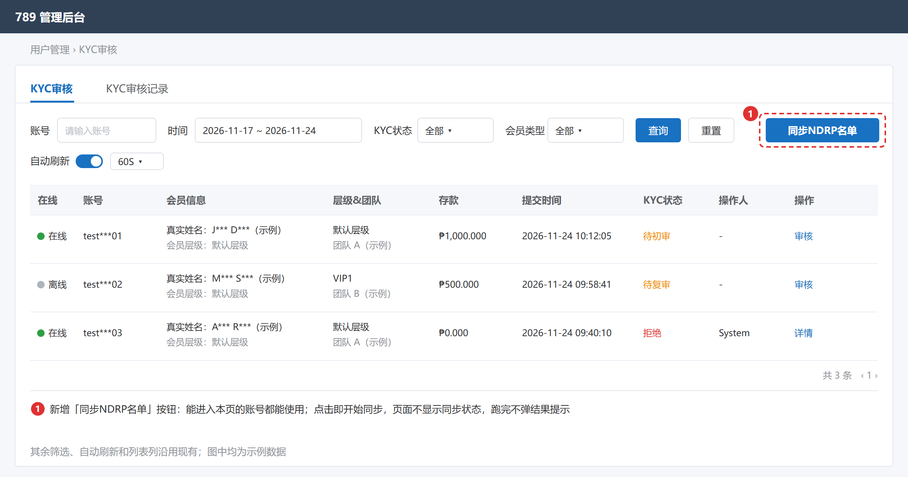

NDRP名单定期同步 · KYC 前置名单筛选与名单定期同步 · 产品开发需求文档（PRD）· v1.1
需求版本管理表
| 版本号 | 时间 | 修改人 | 概述 | 涉及章节 |
|---|---|---|---|---|
| v1.1 | 2026-11-28 | Joshua | 去掉手动同步跑完后的结果提示（原「同步完成，变更 N 条」「同步失败，已保留现有名单」）和按钮旁的同步状态行，页面不显示同步状态；补附录 C 前台文案中英对照、附录 D 页面控件说明 | |
| v1.0 | 2026-11-26 | Joshua | 按 Wiki 需求文档第 10 版建需求包；新增备用方案 A、B、C | 全文 |
全文目录
适用前提：本文件是主方案，内容为 Wiki 第 9 版。适用前提：PAGCOR NDRP 系统能下载全量名单，或提供批量接口（技术正在确认，见 BB789BINGO-7677）。
备用方案：技术确认两种都没有时，从以下三份备用方案中选一份：备用方案 A（本地名单库人工维护）、备用方案 B（PAGCOR 定期提供名单文件，由技术导入）、备用方案 C（人工维护本地名单库，并定期复查已通过 KYC 的会员）。
1. 背景与问题
- NDRP 名单：PAGCOR 官方发布的受限制人员名单（National Database of Restricted Persons，全国受限人员数据库），来源为 PAGCOR NDRP 网站。本需求用它判断用户是否在名单内：在名单内的，KYC 不通过；不在的，继续 KYC 流程。
※ 命中名单即拦截，不区分名单内人员类别（政府官员、自我排除、家属申请排除、博彩从业人员等）。 - 现状：用户完成 KYC 后，平台才实时调用 PAGCOR 接口查询名单；接口失败时重试 3 次，再改查本地名单库（BB789BINGO-250、BB789BINGO-2801）。
- 存在问题：
- 校验滞后：名单校验在 KYC 完成之后才做，此时名单内人员已完成注册和 KYC（BB789BINGO-1416、BB789BINGO-1523）。
- 依赖对方接口：PAGCOR 接口返回 503（服务不可用）时校验直接失败（BB789BINGO-6200）；每日批量核对任务曾连续 6 天全部失败，无人发现（BB789BINGO-6572）。
- 名单时效差：本地名单库不是最新，名单内人员仍能通过 KYC，已移出名单的人员仍被拒绝。
- 事后补救成本高：每周人工清理名单内的用户数据（BB789BINGO-3868 等）。
- 相关工单：BB789BINGO-6387（原技改单，已挂起）、GAM-636（789Games 请 PAGCOR 放行出口 IP 访问 NDRP 接口）。本期各站工单见第 9 节。
2. 需求目标与范围
目标：平台每天 04:00（GMT+8）从 PAGCOR 同步 NDRP 名单到本地名单库，后台也可手动同步。用户做 KYC 时先填写姓名，用本地名单库初筛；未命中再做证件识别，证件姓名（证件识别返回的姓名原值）与填写姓名一致后，调 PAGCOR 实时查询接口做实时核对。初筛或实时核对命中名单的，KYC 不通过。同步和核对结果由系统记录、可追溯；告警情况见第 6 节。
适用站点：789Bingo、789Games、789Play 三站，规则一致；三站各自建单、各自验收。
本期范围
- 名单定期同步：每天 04:00 定时从 PAGCOR 获取最新名单，也可在【用户管理 › KYC审核】页手动同步；数据校验不通过时不覆盖现有名单。
- 本地名单库：沿用现有【系统管理 › NDRP名单配置】，页面本期不改；同步成功后只更新从 PAGCOR 同步的名单，后台手动新增的名单不变。
- KYC 名单筛选：新增「填写姓名」页，先用本地名单库初筛；再比对证件姓名与填写姓名，不一致则 KYC 不通过；一致后调 PAGCOR 实时查询接口做实时核对，3 次请求都失败则跳过实时核对。
- 同步失败重试；四种告警情况见第 6 节「告警」。
- 后台管理：在【用户管理 › KYC审核】页增加「同步NDRP名单」按钮；KYC 不通过原因写进审核记录现有的原因（备注）；同步记录由系统保存供审计，不在页面显示。
不在本期范围
- 已通过 KYC 的存量用户不因名单更新而复查；需要复查时另提需求（见第 8 节 Q9）。
- 实时核对跳过后的自动补查、本地名单库超过 26 小时未同步成功时改为不跳过实时核对、KYC 重新提交次数上限，本期不做（见第 8 节 Q7、Q8、Q10）。
- 名单版本管理（版本号、历史版本查看和导出）、同步参数的后台配置页面，本期不做；同步时间、校验阈值、重试次数、告警接收人（技术负责人和合规负责人）由技术配置。
- 注册环节已有的校验、21+ 年龄校验、同名校验（现有规则）等其他规则保持现状。
3. 业务流程
核心变化：名单由平台每天定时同步到本地名单库，也可在后台手动同步；KYC 从「完成后才查」改为三道检查：填写姓名后本地初筛 → 证件姓名比对 → PAGCOR 实时核对。

图1 KYC 新流程总图：前台自助 KYC 的 6 步及各分支结果；其他三个入口从步骤 2 汇入，跳过步骤 3、4。步骤说明见 3.2。
3.1 名单同步

图2 名单同步流程图：定时或手动触发，同一时间只运行一个同步任务；数据校验不通过时不覆盖现有名单；定时同步重试 3 次仍失败则告警。
| 步骤 | 处理 | 结果 / 下一步 |
|---|---|---|
| 1 | 每天 04:00 定时触发，或后台手动触发 | 已有同步任务在运行时，本次不启动新任务；否则进入步骤 2 |
| 2 | 登录 PAGCOR NDRP 系统，获取名单 | 成功 → 步骤 3；登录失败或网络异常 → 记为失败，定时同步进入重试，手动同步不重试 |
| 3 | 数据校验：结果为空、条数比本地名单库中从 PAGCOR 同步的名单减少超过 20%、格式异常，任一情况即不通过 | 通过 → 步骤 4；不通过 → 记为失败、保留现有名单，定时同步进入重试，手动同步不重试 |
| 4 | 按 PAGCOR 名单更新本地名单库中从 PAGCOR 同步的名单；后台手动新增的名单不变 | 系统记录新增、移出的条数和明细；没有变化时名单不变，新增、移出记为 0 |
定时同步失败后每 10 分钟重试一次，最多重试 3 次（首次 + 重试 3 次，共执行 4 次）；仍失败则告警，当天不再自动同步，等次日 04:00 或手动同步。同步失败时继续使用现有名单，KYC 初筛不受影响。
3.2 KYC 名单筛选（流程见图1）
| 步骤 | 处理 | 结果 / 下一步 |
|---|---|---|
| 1 | 用户在 KYC 第一步「填写姓名」页（新增）填写姓名 | 提交后进入步骤 2 |
| 2 | 用填写的姓名在本地名单库初筛 | 命中 → KYC 状态置为「拒绝」，本次流程结束；未命中 → 步骤 3 |
| 3 | 原 KYC：证件识别、活体检测（789Bingo 用 Zoloz；789Games 计划用阿里云 eKYC；789Play 暂定与另两站流程一致，见第 8 节 Q4、Q14） | 沿用现有；完成后进入步骤 4 |
| 4 | 证件姓名与填写姓名比对 | 一致 → 步骤 5；不一致 → KYC 状态置为「拒绝」，本次流程结束；可修改姓名后重新提交 |
| 5 | 用证件姓名调 PAGCOR 实时查询接口做实时核对，最多请求 3 次（首次 + 重试 2 次） | 命中 → KYC 状态置为「拒绝」，本次流程结束；未命中 → 步骤 6；3 次都失败 → 跳过实时核对，记录并告警，进入步骤 6 |
| 6 | 原有其他审核（21+ 年龄校验、同名校验、自动或人工审核） | 沿用现有；通过 → KYC 状态置为「完全认证」 |
※ 现状「实时查询失败重试 3 次后改查本地名单库」不再保留，本地名单库初筛已在步骤 2 完成。
4. 功能需求
4.1 名单同步任务
- 用平台的运营商账号登录 PAGCOR NDRP 系统获取名单，获取方式由技术确定。
- 登录账号和密码加密保存，不写进代码和日志，由技术维护，不做后台修改入口。
- 每天 04:00（GMT+8）执行一次；时间由技术配置，不做后台配置页面。调整同步时间时参考后台按小时的投注和登录数据（见第 8 节 Q11）。
- 可在【用户管理 › KYC审核】页手动同步（规则见 4.4「手动同步」）；同一时间只运行一个同步任务，定时、手动、重试都受此限制。
- 数据校验：结果为空、条数比本地名单库中从 PAGCOR 同步的名单减少超过 20%、格式异常，任一情况即判本次同步失败，不覆盖现有名单。
- 失败重试：定时同步失败后每 10 分钟重试一次，最多重试 3 次（首次 + 重试 3 次，共执行 4 次）；仍失败则告警，当天不再自动同步，等次日 04:00 或手动同步；手动同步不重试。
4.2 本地名单库
- 本地名单库：沿用现有【系统管理 › NDRP名单配置】，不新建模块，页面本期不改。【系统管理 › 风控黑名单配置】与本需求无关，不变。
- 同步范围：同步只更新从 PAGCOR 同步的名单，后台手动新增的名单不变；两者如何区分由技术确定，不在页面显示。后台手动新增名单的增删改沿用现有。从 PAGCOR 同步的名单以 PAGCOR 为准，后台对这部分名单的修改、删除，在下次同步时恢复为 PAGCOR 的内容。
- 更新：数据校验通过后，PAGCOR 名单新增的人员加入本地名单库，PAGCOR 名单已移出的人员从本地名单库移出；新增和移出明细由系统记录（见第 5 节）。
- 写入完整性：新名单全部写入后才生效，KYC 初筛不读取未写完的名单。
- 首次上线：上线前须成功同步一次，未成功同步前不上线 KYC 名单筛选。首次同步时，本地名单库现有记录全部按后台手动新增保留，不自动移出；上线前由合规负责人人工核对，删除已不需要的记录。
※ 名单含真实受限人员的个人信息：名单查询、导出的权限和脱敏沿用现有，不得外传。
4.3 KYC 名单筛选
- 填写姓名页（新增）：KYC 第一步，字段为 First Name（名）、Middle Name（中间名）、Last Name（姓），必填和格式规则沿用现有；原 KYC 资料页的姓名填写移到本页，后续步骤不再填写姓名。文案：标题 Enter Your Name（填写姓名）；说明 Enter your name as shown on your ID.（请按证件填写姓名。）；按钮 Next（下一步）。重新提交时带出上次填写的姓名；加载、网络异常和隐私告知沿用现有 KYC 页面。见图3。
- 本地初筛：用户点击 Next 后，在证件识别和活体检测之前，立即用填写姓名比对本地名单库（含后台手动新增的名单）。此时没有证件生日等信息，只比对姓名。
- 证件姓名比对：
- 证件信息确认页沿用现有；姓名比对和实时核对只用证件姓名（证件识别返回的姓名原值），不受确认页修改影响。
- 识别不出姓名：按证件识别失败处理（沿用现有提示，重新拍摄证件），不按姓名不一致处理。
- 不一致：KYC 状态置为「拒绝」，本次流程结束，不转人工审核；前台提示见下文「前台提示」；原因「证件姓名与填写姓名不一致」写进 KYC 审核记录现有的原因（备注）。
- PAGCOR 实时核对：
- 用证件姓名（不是填写的姓名）调 PAGCOR 实时查询接口做实时核对；需要附带哪些证件信息由技术确定。
- 最多请求 3 次（首次 + 重试 2 次），任一次成功返回即按该次结果处理。3 次的总等待时长上限由技术确定，超过上限按 3 次都失败处理，跳过实时核对。核对期间前台沿用现有提交加载状态。
- 3 次都失败 → 跳过实时核对：只跳过这一步，本地初筛、姓名比对、21+ 年龄校验和其他审核照常；原因（备注）标注「实时核对跳过」；触发告警；前台不提示。
- 覆盖所有能使 KYC 变为通过的入口：前台自助 KYC 的所有端（H5、PC、PWA、iOS、Android、小程序，以及仍能发起 KYC 的安卓原生老包）走上述全部步骤，不能跳过填写姓名页。以下三个入口没有填写姓名，不做姓名比对，只用入口带入的证件姓名做本地初筛和实时核对；命中则 KYC 状态置为「拒绝」，不通过原因同下文「命中处理」；实时核对跳过的规则与前台自助 KYC 相同；读取本地名单库失败时不放行，并触发告警：
- PAGCOR 手机号自动认证。
- 后台人工补录通过 KYC：点击 Pass KYC（通过 KYC）时，用证件姓名做本地初筛和实时核对；命中则弹出提示「命中 NDRP 名单，不能通过 KYC」。
- 跨站 KYC 数据互通（如 789Games 同步 789Bingo 已通过的 KYC）：命中则不同步为通过。
- 名单比对和姓名比对规则：名单比对（本地初筛、实时核对）和证件姓名比对，两种比对的处理方式都由技术确定，包括比对哪些字段，大小写、空格、标点、Ñ 与 N、Middle Name 缺失或缩写、后缀（Jr.、III）怎么处理，名单记录缺少字段时怎么处理；要求名单内人员能被识别，姓名与名单内人员不同的正常用户不被误拦（同名情况见第 8 节 Q12）。
- 命中处理（本地初筛命中、实时核对命中相同）：
- KYC 状态置为「拒绝」，本次流程结束。
- 前台提示：Verification failed. Please contact support.（验证失败，请联系客服。），按钮为 Contact Support（联系客服）。不向用户提示命中 NDRP 名单。
- 不通过原因「命中 NDRP 名单（本地初筛）」或「命中 NDRP 名单（实时核对）」写进 KYC 审核记录现有的原因（备注），操作人为 System（系统）。
- KYC 不通过后，用户的充值、游戏、提现限制沿用现有「KYC 未通过」规则，本需求不改。上线前三站的「实名验证」（充值需 KYC）和「游戏 KYC 设置」（进游戏需 KYC）开关必须打开，确保 KYC 未通过的用户不能充值、进游戏。
- 前台提示（见图4）：
- 姓名不一致：标题 Name Mismatch（姓名不一致）；Your name doesn't match your ID. Please check and resubmit.（姓名与证件不一致，请核对后重新提交。）；按钮 Resubmit（重新提交）。
- 名单命中：见上文「命中处理」。实时核对跳过：不提示。
- ※ 前台任何页面和提示都不出现 NDRP、名单、政府官员字样。
- 客服口径：只告知审核未通过，不说明是否在名单内；用户申诉的（含与名单内人员同名被误拦的正常用户），转合规负责人核实；核实后如何放行，另提需求。参考话术：Your verification was not approved. We can forward your appeal to our compliance team.（验证未通过，可为您转交合规团队申诉。）
- 重新提交：用户重新提交 KYC 时从填写姓名页开始，证件识别和活体检测重新做，不复用上次结果。姓名不一致的，可修改姓名后重新提交；仍在名单内的，再次不通过；已从名单移出的，按正常流程继续。
- 本地名单库读取失败：初筛时读取本地名单库失败，本次提交不成功，前台沿用现有网络异常提示，用户稍后重试；同时触发告警。
- 上线切换：上线时已提交、尚未审核完成的 KYC 按原流程审核完；上线时尚未提交的，下次进入 KYC 时走新流程。

图3 前台「填写姓名」页（手机 375 像素宽）：KYC 第一步，提交后立即用本地名单库初筛。

图4 前台提示页：左为姓名不一致（可重新提交），右为验证失败（名单命中，不透露原因）。
4.4 后台管理
不新建模块，在下表所列的现有页面上增加功能。
| 模块 | 所在页面 | 功能 |
|---|---|---|
| 手动同步 | 【用户管理 › KYC审核】「KYC审核」页签筛选栏右侧 | 按钮「同步NDRP名单」，规则见表下「手动同步」 |
KYC 审核记录：【用户管理 › KYC审核】「KYC审核记录」页签沿用现有页面，不新增筛选、列和展示。不通过原因「命中 NDRP 名单（本地初筛）」「命中 NDRP 名单（实时核对）」「证件姓名与填写姓名不一致」和标注「实时核对跳过」写进现有的原因（备注），沿用现有显示和导出。
手动同步
- 能进入【用户管理 › KYC审核】页的账号即可使用（沿用现有页面权限）。点击「同步NDRP名单」按钮即开始同步；已有同步任务在运行时，本次点击不启动新任务。页面不显示同步状态，同步跑完后也不弹结果提示（成功、失败都不提示）；同步失败按第 6 节告警。

图5 后台【用户管理 › KYC审核】页：原筛选和列表不变，红框为新增的「同步NDRP名单」按钮（示例数据）。
5. 同步与核对记录
每次同步（含每次重试）各记录一条：触发方式（定时 / 手动 / 重试）、操作人（手动时）、开始和结束时间、结果、获取条数、新增和移出明细、失败原因。
每次 KYC 记录每一步结果：本地初筛结果和时间（命中时含命中的名单记录）、姓名比对结果（含两边姓名）、实时核对每次请求的时间、结果（未命中 / 命中 / 失败）和失败原因、是否跳过。
后台对本地名单库任何记录的增删改、人工补录 KYC 被名单拦截，写后台操作日志（沿用现有）：时间、操作人、变更前后的内容（拦截时为命中的名单记录）。操作日志与每次同步的新增、移出明细一起，能还原任一时刻的名单。
以上记录由系统保存，供审计追溯；不新增页面展示，查询方式由技术确定。后台 KYC 审核记录只在现有的原因（备注）里写不通过原因和「实时核对跳过」。
6. 非功能需求
| 类别 | 要求 |
|---|---|
| 同步频率 | 每天 04:00（GMT+8）一次，由技术配置 |
| 失败重试 | 定时同步失败后每 10 分钟重试一次，最多重试 3 次（首次 + 重试 3 次，共执行 4 次）；仍失败则当天不再自动同步，等次日 04:00 或手动同步；手动同步不重试；同一时间只运行一个同步任务；每次重试都由系统记录 |
| 告警 | 四种情况告警：① 定时同步重试 3 次仍失败；② 距最后一次成功同步超过 26 小时（含定时任务未执行），每天告警一次，直到同步成功；③ 读取本地名单库失败（含三个其他入口）；④ 实时核对跳过（同一时段多次可合并，规则由技术确定）。渠道为 Telegram 和邮件，接收人为技术负责人和合规负责人 |
| 降级 | 同步失败时不覆盖、继续使用现有名单；读取本地名单库失败时本次 KYC 提交不成功，不放行；PAGCOR 实时查询接口 3 次都失败时只跳过实时核对，其他校验照常 |
| 性能 | 同步任务在后台执行，不影响线上业务；本地初筛和实时核对的等待时长上限由技术确定 |
| 安全 | 账号密码加密存储；名单查询、导出的权限和脱敏沿用现有，不得外传 |
| 审计 | 每次同步的系统记录（含新增和移出明细）、KYC 核对记录（含填写姓名、姓名比对、实时核对和跳过）、后台操作日志至少保存 5 年，从记录产生或账户关闭起算，取两者中较晚的 |
7. 验收标准
- 定时同步在每天 04:00（GMT+8）按时执行。
- 能进入 KYC审核页的账号都能看到并使用「同步NDRP名单」按钮；点击后开始同步，页面不显示同步状态，跑完后不弹结果提示；系统记录的触发方式为「手动」，并有操作人。
- 模拟登录失败、网络异常、结果为空、条数减少超过 20%、格式异常：同步判为失败，不覆盖现有名单；定时同步每 10 分钟重试一次，最多重试 3 次，仍失败则触发告警、当天不再自动同步；手动同步失败不重试；同一时间只运行一个同步任务。
- 模拟定时任务未执行超过 26 小时：触发告警，之后每天告警一次，直到同步成功。
- 同步成功后，从 PAGCOR 同步的名单与 PAGCOR 名单一致，后台手动新增的名单不变；后台修改或删除过的从 PAGCOR 同步的名单，恢复为 PAGCOR 的内容；系统记录的新增、移出条数和明细与实际差异一致。
- 用名单内人员姓名在填写姓名页点 Next：立即提示验证失败，不进入证件识别和活体检测；KYC 状态为「拒绝」；审核记录原因（备注）显示「命中 NDRP 名单（本地初筛）」，导出包含该内容；系统记录命中的名单记录和时间。
- 填写姓名与证件姓名不一致：前台显示 Name Mismatch，点 Resubmit 回到填写姓名页；KYC 状态为「拒绝」，不进入人工审核；审核记录原因（备注）显示「证件姓名与填写姓名不一致」，导出包含该内容。识别不出姓名时提示重新拍摄证件，不判为不一致。
- 名单比对：名单内人员能被拦截，姓名与名单内人员不同的正常用户不被误拦。
- 证件姓名比对：按技术确定的规则，大小写、空格不同的同一人不被判为不一致。
- PAGCOR 实时核对命中：前台提示验证失败；审核记录原因（备注）显示「命中 NDRP 名单（实时核对）」，导出包含该内容。
- 模拟 PAGCOR 实时查询接口 3 次都失败：KYC 继续进入原有审核，前台无跳过提示；审核记录原因（备注）显示「实时核对跳过」，导出包含该内容；系统有 3 次请求记录和初筛时间；触发告警。第 1 次失败、第 2 次成功时，按第 2 次返回的结果（命中或未命中）处理，不标注跳过。
- PAGCOR 手机号自动认证、后台人工补录通过 KYC、跨站 KYC 数据互通三个入口：名单内人员的 KYC 状态都置为「拒绝」；人工补录命中时，点击 Pass KYC 后弹出提示，KYC 状态为「拒绝」；三个入口不做姓名比对；读取本地名单库失败时不放行，并触发告警。
- 某人从名单移出并同步成功后，再次提交 KYC 可按正常流程继续；名单新增某人并同步成功后，此人下一次提交 KYC 被拦截。
- 模拟初筛时读取本地名单库失败：本次提交不成功，前台显示现有网络异常提示，不放行；触发告警。
- 前台自助 KYC 的每个端（H5、PC、PWA、iOS、Android、小程序、仍能发起 KYC 的安卓原生老包）分别走一遍：都先进入填写姓名页，本地初筛、证件姓名比对、实时核对都生效。
- 三站「实名验证」和「游戏 KYC 设置」开关已打开；KYC 为「拒绝」的用户不能充值、进游戏、提现。
- 前台所有提示和客服参考话术中，不出现 NDRP、名单、政府官员字样。
- 789Bingo、789Games、789Play 三站分别按以上各条验收。
8. 待确认
| 编号 | 问题 | 建议 / 结论 | 确认方 |
|---|---|---|---|
| Q1 | 比对哪些字段，名单记录缺少生日等字段时怎么处理 | 已定：由技术确定（2026-11-24 产品确认） | 技术、合规 |
| Q2 | 三站是否共用一份名单同步结果 | 已定：由技术确定（2026-11-24 产品确认） | 技术 |
| Q3 | 789Games 访问 NDRP 接口的出口 IP 是否已获 PAGCOR 放行（GAM-636）；789Play 是否有同样问题 | 已定：由技术跟进确认（2026-11-24 产品确认） | 技术 |
| Q4 | 789Play 的 KYC 流程和后台菜单与另两站是否一致 | 已定：789Play 暂定与 789Bingo、789Games 流程一致（2026-11-24 产品确认） | 技术 |
| Q5 | 审计记录保留期限 | 已定：至少 5 年，从记录产生或账户关闭起算，取两者中较晚的（2026-11-24 产品确认） | 产品 |
| Q6 | 名单适用人群：NDRP 除政府官员外，还含自我排除、家属申请排除、博彩从业人员 | 已定：命中名单即拦截，不区分类别（2026-11-24 产品确认） | 产品 |
| Q7 | 实时核对跳过的用户，下次同步成功后是否自动用新名单补查 | 已定：本期不做（2026-11-24 产品确认） | 产品 |
| Q8 | 本地名单库超过 26 小时未成功同步时，若实时核对也失败，是否不跳过、改为停在「待初审」 | 已定：本期不做（2026-11-24 产品确认） | 产品 |
| Q9 | 已通过 KYC 的存量用户，名单新增人员后是否复查 | 已定：本期不做，另提需求（2026-11-24 产品确认） | 产品 |
| Q10 | 姓名不一致或名单命中后，同一账号每天重新提交 KYC 的次数是否设上限（防止反复换姓名试探名单） | 已定：本期不做（2026-11-24 产品确认） | 产品 |
| Q11 | 04:00（GMT+8）是否为全天在线人数最少的时段 | 已定：本期不另做核对，按 04:00 执行。前台展示的在线人数是后台配置的数字，不能作依据；调整同步时间时参考后台按小时的投注和登录数据（2026-11-24 产品确认） | 产品 |
| Q12 | 同名误拦：本地初筛只比姓名，与名单内人员同名的正常用户会被拒，人工补录也不能通过，怎么放行 | 已定：本期由客服转合规负责人核实；核实后的放行方式另提需求（2026-11-24 产品确认） | 产品 |
| Q13 | 现网 KYC 填写姓名时，是否已有用 NDRP名单配置做的本地初筛（资料矛盾） | 请技术确认；已有则改造为 3.2 步骤 2，没有则新增 | 技术 |
| Q14 | 789Games 的阿里云 eKYC、789Play 的证件识别，能否返回证件姓名（证件识别返回的姓名原值） | 请技术确认；不能返回时 3.2 步骤 4 无法执行，需另定方案 | 技术 |
| Q15 | 现有后台操作日志是否记录变更前后的内容 | 请技术确认；不记录的，按第 5 节补齐 | 技术 |
| Q16 | 仍能发起 KYC 的安卓原生老包版本号和机型范围；小程序能否发起 KYC | 请技术确认；确认后写进 4.3「覆盖所有能使 KYC 变为通过的入口」 | 技术 |
9. 各站工单
789Bingo：BB789BINGO-7677；789Games：GAM-649；789Play：PLY-2。
10. 备用方案
技术确认 PAGCOR NDRP 系统既不能下载全量名单、也没有批量接口时，从以下三份备用方案中选一份；选定后以对应文档为准。
10.1 备用方案 A：本地名单库人工维护
适用前提：技术确认 PAGCOR NDRP 系统既不能下载全量名单，也没有批量接口。
与主方案的差异：
- 不做名单同步（定时同步、手动同步都不做）；本地名单库由合规负责人在【系统管理 › NDRP名单配置】人工维护。
- 【用户管理 › KYC审核】页不加「同步NDRP名单」按钮。
- 告警从四种减为两种：读取本地名单库失败、实时核对跳过。
- KYC 的三道检查（本地初筛 → 证件姓名比对 → PAGCOR 实时核对）、三个其他入口、前台页面和提示，与主方案相同。
- 依赖：合规负责人日常维护本地名单库。本地名单库会比 PAGCOR 名单旧，实时核对 3 次都失败而跳过时，漏拦风险比主方案高（见该备用方案文档第 8 节 Q8）。
- 第 8 节待确认沿用主方案编号，便于对照；本方案不适用的编号不列，新增的从 Q16 起编。
完整文档：备用方案 A：本地名单库人工维护
10.2 备用方案 B：PAGCOR 定期提供名单文件
适用前提：技术确认 PAGCOR NDRP 系统既不能下载全量名单，也没有批量接口；同时 PAGCOR 同意定期向平台提供全量名单文件（由法务申请）。
与主方案的差异：
- 名单来源从「登录 PAGCOR NDRP 系统获取」改为「PAGCOR 定期提供的名单文件」；收到文件后由技术导入本地名单库，不做定时同步，也不做后台导入页面。
- 【用户管理 › KYC审核】页不加「同步NDRP名单」按钮。
- 导入的数据校验、只更新从 PAGCOR 获取的名单、首次上线规则，与主方案的同步规则相同。
- 告警 ①「定时同步重试 3 次仍失败」改为「导入数据校验不通过」；告警 ②「超过 26 小时未成功同步」改为「超过约定的文件周期仍未成功导入」。
- KYC 的三道检查（本地初筛 → 证件姓名比对 → PAGCOR 实时核对）、三个其他入口、前台页面和提示，与主方案相同。
- 依赖：法务向 PAGCOR 申请；PAGCOR 同意并确定文件周期和格式（见该备用方案文档第 8 节 Q16）；技术导入。本地名单库按文件周期更新，周期长于一天时，实时核对跳过时的漏拦风险比主方案高（见该备用方案文档第 8 节 Q8）。
- 第 8 节待确认沿用主方案编号，便于对照；本方案不适用的编号不列，新增的从 Q16 起编。
完整文档：备用方案 B：PAGCOR 定期提供名单文件
10.3 备用方案 C：批量复查存量会员
适用前提：技术确认 PAGCOR NDRP 系统既不能下载全量名单，也没有批量接口；同时技术确认 PAGCOR 实时查询接口能承受批量查询（见该备用方案文档第 8 节 Q16）。
与主方案的差异：
- 不做名单同步（定时同步、手动同步都不做）；本地名单库由合规负责人在【系统管理 › NDRP名单配置】人工维护（与备用方案 A 相同）。
- 新增「存量会员复查」：定期用 PAGCOR 实时查询接口逐个复查 KYC 已通过的会员，命中的 KYC 状态改为「拒绝」。主方案第 8 节 Q9「存量用户复查」在本方案中要做。
- 【用户管理 › KYC审核】页不加「同步NDRP名单」按钮。
- 告警改为三种：读取本地名单库失败、实时核对跳过、存量复查结果。
- KYC 的三道检查（本地初筛 → 证件姓名比对 → PAGCOR 实时核对）、三个其他入口、前台页面和提示，与主方案相同。
- 依赖：合规负责人日常维护本地名单库；PAGCOR 实时查询接口能否承受批量查询、一轮复查需要多久，待技术确认（Q16）。存量复查能发现通过 KYC 后才被列入名单的会员，也会补查实时核对被跳过的会员。
- 第 8 节待确认沿用主方案编号，便于对照；本方案不适用的编号不列，新增的从 Q16 起编。
完整文档：备用方案 C：批量复查存量会员
附录 C 前台文案中英对照
前台原型画面里的中文和英文对照，发布站点的前台原型按此表显示英文。本表由页面自动读取 assets/proto-en.js 生成；开发按英文列实现界面文案。
| 序号 | 中文（原型制作用） | 英文（界面实际文案） |
|---|
附录 D 页面控件说明
原型上控件的作用、场景与状态、交互结果和限制。本表由页面自动读取 assets/dev-notes.js 生成；开发和产品角色查看原型时，控件右上角的「研发说明」标签显示同一份内容。
| 编号 | 控件 | 说明 | 计算公式与规则 |
|---|